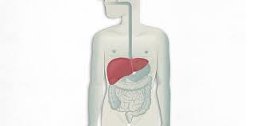

|  |
En el caso del trasplante de hígado, se tienen en cuenta las características del donante, como su grupo sanguíneo que debe coincidir con el del receptor, así como la gravedad del paciente, que se mide con el denominado modelo de enfermedad hepática terminal. El resultado es un número obtenido a partir de las cifras de bilirrubina, creatinina y tiempo de protrombina del paciente, y que sirve para priorizarlo en la lista de espera, según su riesgo de mortalidad en los tres meses siguientes. En esta asignación donante-receptor no se valoran otras variables que optimizarían la compatibilidad entre ellos y podrían suponer un factor decisivo en los resultados del trasplante. Por eso una propuesta es una mejora que favorece los principios de justicia para el receptor y de utilidad del injerto, adecua los tiempos de espera al riesgo de mortalidad en lista activa y mejora la supervivencia
|